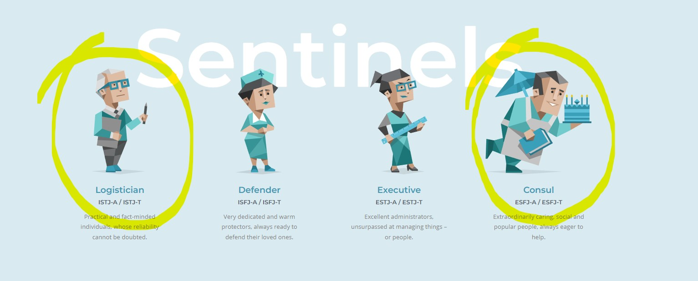
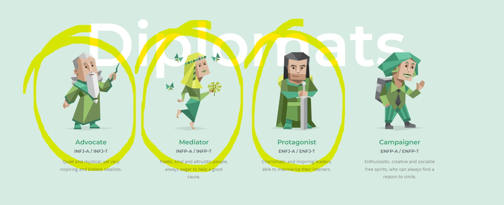

Aaron Still
Student ID: S390204
My name is Aaron Still (s390204) I am 20 and I live in Woodend which is an hour out of Melbourne towards Bendigo. I do tennis training and
competition tennis once a week. I like to take my dog for walks and giving him treats. I play video games and watch tv shows and movies.
I am currently playing Doom Eternal and watching The Boys. I like to hang out with my friends and play games with them. Last year I was enrolled in
the Bachelor of Business: Information Systems but I really didn’t enjoy it so I changed to the Bachelor of Information Technology. I like to mess
around on computers and solve issues for my family. I really enjoy coding and have been really liking learning about it. I did an IT class in year 9
and built my own computer as well as working on assignments for other classes.
Pucksuly Siharath
Student ID: S3900851
I am a second year uni student studying a Bachelor of Information Technology at RMIT. I recently transferred from engineering into IT
because I enjoyed the programming side of my previous course. Information technology also appealed to me due to its career prospects and wide range
of qualifications. Nevertheless, I’ve always found interest in working with technology and love to learn about it, which is probably a strength of mine.
Since young I’ve been asked to solve issues in technology whether present in the classroom or home environment. I have some people in my life that have
studied/are studying IT, and this encouraged me further to take up the program. Unfortunately I do not have any outstanding IT experience to date,
but am keen to get into the industry to gain some. I'm fluent in English and Laotian, and studied Japanese throughout school (although probably rusty now),
and have an interest in sports - I played basketball during every lunch/recess throughout school, and now play casually, I have been coaching two junior teams since December 2021; have been playing badminton
since the beginning of the year. I enjoy recreational activities in my spare time, like hiking or playing guitar.
Daniel La
Student ID: S3909873
Hi! My name is Daniel La, I am 19 years old, and my date of birth is the 22nd of January 2003. My nationality is Vietnamese and Chinese,
as my mum being full Vietnamese and dad being half Vietnamese and half Chinese. Growing up, both my parents taught me their national language,
so I can fundamentally speak and understand a few languages such as Vietnamese, Mandarin, Cantonese, and Hakka.
For my education, I was a high school graduate of 2020 from Wellington Secondary College who studied English, Chinese, Math's Methods, Accounting,
Economics and Psychology. I previously enrolled and studied Bachelor of Computer Science last year, however the course layout and content were not
to my interest, thus now I am studying IT. During my free time, I have hobbies of listen to music, watching videos, play many games like Valorant,
exercising and attend social gatherings. A few interesting facts about me is that my favorite artist is Khalid, I love watching videos such as YouTube,
movies, Netflix, anime etc and my favorite food is Pho, a popular traditional Vietnamese dish.
Mi Diem Huynh
Student ID: S3722873
Hello, my name is Mi and it’s pronounced as me, and I was born in Melbourne. I am completing a Bachelor of Business degree.
My nationality is Vietnamese, and I am fluent in the language. Aside from Vietnamese, I can communicate in basic Italian.
I have two dogs and like sports. My favourite topics in school were sports and business. I enjoy listening to music and dancing with my friends.
League of Legends, Valorant, and PUBG are some of my favourite games. When I taste food, I can determine what components were used in the dish.
My other hobbies include spending time with my family, watching TV and watching travel vlogs. I also enjoy going to music concerts and watching
sports events live. I have experience in creating a website and making databases using Microsoft Excel. I have always had an interest in IT since
I was young, and I used to fix other people’s computers in class when something went wrong.
Dylan Adams
Student ID: S3849200
Hi! My name is Dylan Adams, I am 21 and currently enrolled in my final semester as a student at RMIT.
I am born and raised in Eastern Melbourne Australia where I have undertaken my high school studies at St. Joseph's College Ferntree Gully.
I am also involved in a local football team (Upper Ferntree Gully) where I spend most of my Saturday’s playing & supporting the club.
My other hobbies include gaming, spending most of the time playing Fortnite as well as playing the guitar.
I also have 2 dogs, one named Spud who is 14 and a border collie, and another named Letty, who is only 6 months and is the newest addition to our family.

The Myer-Briggs test categorises the personalities in four main headings - the Analysts, Diplomats, Sentinels and Explorers.
From Diplomats we have a Protagonist (Dylan), Advocate (Daniel) and Mediator (Mi).
Our mediator will encourage a feeling of purpose in the group, inspiring others to create an emotional and moral connection to what they do. This drive of
service will shape how incredibly well they respond to and display authority in the workplace.
Our protagonist will prosper in a wide range of roles at any degree of seniority, bringing the friendly, optimistic, charming, creative and social aspects
to our group. They are often affable and good-natured, which will propel them to success anywhere they have the opportunity to collaborate with others.
When it comes to a good work environment, our advocate will strive best when they are able to assist other group members while also improving as a person.
While they are inclined to have some rules and requirements, it goes without saying they will help to keep our group in check.
From the Sentinels we have a Consul (Abby) and Logistician (Aaron).
Our logistician is practically a cliche for the hard-working, obedient employee in a workplace. Responsibilities will not be a burden for this person,
as they are an opportunity for them demonstrate that they are the ideal person for the position, and thus a great addition to the group.
Consuls will be able to use their warmth and social intelligence to ensure that everyone knows their roles and can get the job done.
Our consul will be comfortable with, and even rely on, clear hierarchies and responsibilities, and will want the group to be respected, display respect
and be supported by rules and standards.

Across our group we have a variation in preferred learning styles, but there is a common importance placed on visual and kinesthetic learning.
To accommodate for our visual learning preferences, we could focus more on the design of our materials than on the content. As part of Assignment 2,
the use of GitHub and repositories is a major part of the work, so this will definitely incorporate the visual learning and enable us to display our
creativity. Changing complex lists into flowcharts, using a whiteboard to illustrate brainstorming would also be beneficial for those who work well visually.
As for kinesthetic learning, it’s hard to be walking around during the meeting as we had the virtual class, but writing notes would help our
group members stay mentally engaged. By doing this we’re using physical activity to better process the information we learn and things we discuss.
Taking notes will provide a reference for our meetings and help with our progression throughout the assignment.